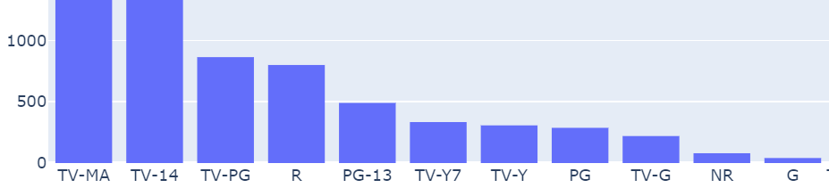

Description
Analyze Netflix's TV shows and movies using Exploratory Data Analysis (EDA) to gain insights into their performance and characteristics.
Skills Applied: Python
Libraries Used: pandas, plotly, matplotlib
Implementation
- To initiate the analysis, I will import the CSV dataset into Jupyter Notebook to facilitate the required analysis.
- Subsequently, I will conduct a preliminary Exploratory Data Analysis (EDA) by examining the data types (.dtypes) of variables and generating descriptive statistics (.describe). This will provide valuable insights into the nature of the variables and help identify any necessary changes before delving deeper into the analysis.
- Following that, I will delve into a comprehensive analysis by creating various types of charts (Plotly and MatplotLib) and performing detailed breakdowns of the data, allowing for a more extensive exploration.
Breakdown
PYTHON
- To ensure ease of access and a better understanding of the code and analysis, I have prepared a detailed breakdown of every aspect of my analysis.
- It would be more convenient for you to download and review the code, along with the comprehensive analysis, using your preferred platform such as Visual Studio Code or Jupyter Notebook.
- This will allow you to digest the information more effectively and make the most of the insights provided.
OR
Click here to view it onlineOverview of the analysis:
-
Importing Libraries and dataset
- Pandas
- Plotly
- MatplotLib
-
Exploratory Data Analysis
- Data Types
-
Statistics Summary
- Min, Max, Mean, Count
- Standard Deviation
-
Data Analysis
- Histogram (MatplotLib version)
- Histogram (Plotly version)
- Bar Chart
-
String Column Analysis
- Pivot/Unpivoting
- Columns' Information Breakdown
Preview